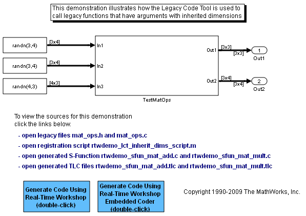
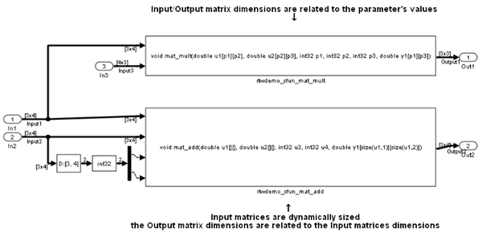

Inherited Signal Dimensions
This demo shows you how to use the Legacy Code Tool to integrate legacy C functions whose arguments have inherited dimensions.
The Legacy Code Tool allows you to:
- Provide the legacy function specification,
- Generate a C-MEX S-function that is used during simulation to call the legacy code,
- Compile and build the generated S-function for simulation, and
- Generate a block TLC file and optional rtwmakecfg.m file that is used during code generation to call the legacy code.
Contents
- Providing the Legacy Function Specification
- Generating S-Functions for Use During Simulation
- Compiling the Generated S-Functions for Simulation
- Generating TLC Block Files for Code Generation
- Generating an rtwmakecfg.m File for Code Generation
- Generating masked S-Function blocks for calling the generated S-Functions
- Demoing the Generated Integration with Legacy Code
Providing the Legacy Function Specification
All functions provided with the Legacy Code Tool take a specific data structure or array of structures as the argument. The data structure is initialized by calling the function legacy_code() using 'initialize' as the first input. After initializing the structure, you have to assign its properties to values corresponding to the legacy code being integrated. For detailed help on the properties, call legacy_code('help'). The prototypes of the legacy functions being called in this demo are:
- void mat_add(real_T *u1, real_T *u2, int32_T nbRows, int32_T nbCols, real_T *y1)
- void mat_mult(real_T *u1, real_T *u2, int32_T nbRows1, int32_T nbCols1, int32_T nbCols2, real_T *y1)
where real_T is a typedef to double, and int32_T is a typedef to a 32-bit integer. The legacy source code is found in the files mat_ops.h, and mat_ops.c.
defs = []; % rtwdemo_sfun_mat_add def = legacy_code('initialize'); def.SFunctionName = 'rtwdemo_sfun_mat_add'; def.OutputFcnSpec = ['void mat_add(double u1[][], double u2[][], ' ... 'int32 u3, int32 u4, double y1[size(u1,1)][size(u1,2)])']; def.HeaderFiles = {'mat_ops.h'}; def.SourceFiles = {'mat_ops.c'}; def.IncPaths = {'sldemo_lct_src'}; def.SrcPaths = {'sldemo_lct_src'}; defs = [defs; def]; % rtwdemo_sfun_mat_mult def = legacy_code('initialize'); def.SFunctionName = 'rtwdemo_sfun_mat_mult'; def.OutputFcnSpec = ['void mat_mult(double u1[p1][p2], double u2[p2][p3], '... 'int32 p1, int32 p2, int32 p3, double y1[p1][p3])']; def.HeaderFiles = {'mat_ops.h'}; def.SourceFiles = {'mat_ops.c'}; def.IncPaths = {'sldemo_lct_src'}; def.SrcPaths = {'sldemo_lct_src'}; defs = [defs; def];
Generating S-Functions for Use During Simulation
The function legacy_code() is called again with the first input set to 'sfcn_cmex_generate' in order to automatically generate C-MEX S-functions according to the description provided by the input argument 'defs'. The S-functions are used to call the legacy functions in simulation. The source code for the S-function is found in the files rtwdemo_sfun_mat_add.c and rtwdemo_sfun_mat_mult.c.
legacy_code('sfcn_cmex_generate', defs);
Compiling the Generated S-Functions for Simulation
After the C-MEX S-function source files are generated, the function legacy_code() is called again with the first input set to 'compile' in order to compile the S-functions for simulation with Simulink®.
legacy_code('compile', defs);
### Start Compiling rtwdemo_sfun_mat_add
mex('rtwdemo_sfun_mat_add.c', 'B:\matlab\toolbox\simulink\simdemos\simfeatures\sldemo_lct_src\mat_ops.c', '-IB:\matlab\toolbox\simulink\simdemos\simfeatures\sldemo_lct_src', '-IC:\Temp\R2010bd_251_3840\tp0131b8c4_8885_42d9_84ce_432a16cc3511')
### Finish Compiling rtwdemo_sfun_mat_add
### Exit
### Start Compiling rtwdemo_sfun_mat_mult
mex('rtwdemo_sfun_mat_mult.c', 'B:\matlab\toolbox\simulink\simdemos\simfeatures\sldemo_lct_src\mat_ops.c', '-IB:\matlab\toolbox\simulink\simdemos\simfeatures\sldemo_lct_src', '-IC:\Temp\R2010bd_251_3840\tp0131b8c4_8885_42d9_84ce_432a16cc3511')
### Finish Compiling rtwdemo_sfun_mat_mult
### Exit
Generating TLC Block Files for Code Generation
After the S-function is compiled and used in simulation, the function legacy_code() can be called again with the first input set to 'sfcn_tlc_generate' in order to generate a TLC block file to support code generation through Real Time Workshop. Code generation will fail if the TLC block file is not created and you try to generate code for a model that includes the S-function. The TLC block files for the S-functions are rtwdemo_sfun_mat_add.tlc and rtwdemo_sfun_mat_mult.tlc.
legacy_code('sfcn_tlc_generate', defs);
Generating an rtwmakecfg.m File for Code Generation
After the TLC block file is created, the function legacy_code() can be called again with the first input set to 'rtwmakecfg_generate' in order to generate an rtwmakecfg.m file to support code generation through Real Time Workshop. The file is needed only if the required source and header files for the S-functions are not in the same directory as the S-functions, and you want to add these dependencies in the makefile produced during code generation.
legacy_code('rtwmakecfg_generate', defs);
Generating masked S-Function blocks for calling the generated S-Functions
After the C-MEX S-function source is compiled, the function legacy_code() can be called again with the first input set to 'slblock_generate' in order to generate masked S-function blocks which are configured to call those S-functions. The blocks are placed in a new model and can be copied to an existing model.
% legacy_code('slblock_generate', defs);
Demoing the Generated Integration with Legacy Code
The model rtwdemo_lct_inherit_dims shows integration with the legacy code. The subsystem TestMatOps serves as a harness for the calls to the legacy C functions, with unit delays serving to store the previous output values.
open_system('rtwdemo_lct_inherit_dims') open_system('rtwdemo_lct_inherit_dims/TestMatOps') sim('rtwdemo_lct_inherit_dims') 